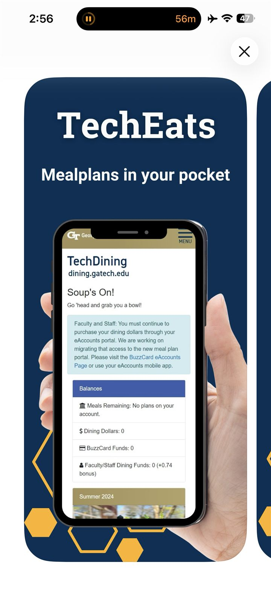
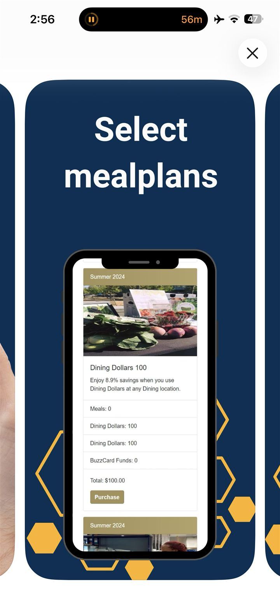
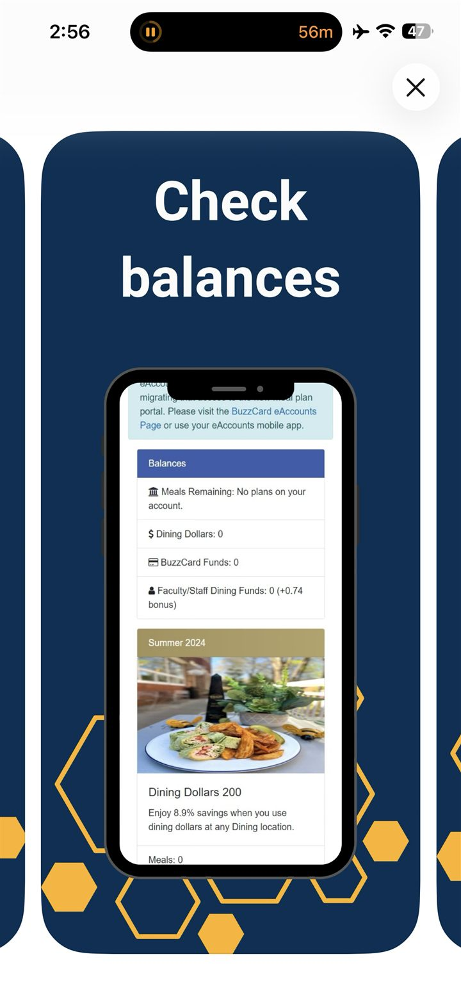

Case study / 02
Bringing meal plans into students’ pockets.
A native mobile experience delivered from one .NET codebase—built, authenticated, tested, and released for both major mobile platforms.
Georgia Tech Dining Services wanted a native mobile presence for the student meal-plan experience. I led the work from framework evaluation and early prototypes through production builds, app-store delivery, and ongoing platform troubleshooting.



The challenge
Native delivery is more than putting a web experience in an app wrapper.
The existing platform was mobile-friendly, but a native app provided a foundation for mobile-specific capabilities and a presence in both app stores. The engineering challenge was to recreate the essential meal-plan workflows while reducing authentication friction and operating within a small team’s maintenance capacity.
I evaluated React Native and Flutter before recommending .NET MAUI. With an existing C# and .NET team, MAUI offered a shared codebase, natural alignment with the service architecture, and a smaller learning burden than introducing an entirely new stack.
End-to-end ownership
From prototype to published app.
I built the app across both platforms, recreated core student workflows, configured iOS and Android builds, and prepared the work for app-store review. The role also included the product-delivery work that tends to sit outside a code editor: application identifiers, signing, store listings, release processes, legal coordination, and submission troubleshooting.
- One shared .NET MAUI codebase for iOS and Android
- Production builds and release workflows for both app stores
- Upgrade path from .NET 6 to .NET 8
- Platform-specific investigation and fixes as mobile OS and framework behavior changed
Authentication
Make secure access feel practical on a phone.
The original sign-on session could expire after roughly an hour, creating unnecessary friction for students on a mobile device. I implemented a flow that allowed users to enable biometric authentication after sign-in, allowing a defined period of quicker return access while preserving the institution’s authentication requirements.
The work required continued attention: an iOS update broke behavior that had worked previously. It reinforced a reality of cross-platform delivery—shared code does not remove the need for disciplined, platform-specific testing.
Outcome
A repeatable mobile foundation.
- Published for both iOS and Android
- Created a native channel for student meal-plan workflows
- Reduced repeated sign-in friction through biometrics
- Established reusable build and release processes
- Created a foundation for future mobile-specific capabilities
A shared framework reduced duplicated work. It did not remove the responsibility to understand each platform.